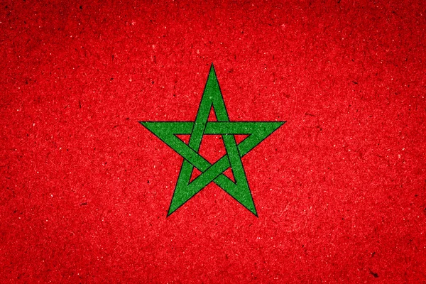
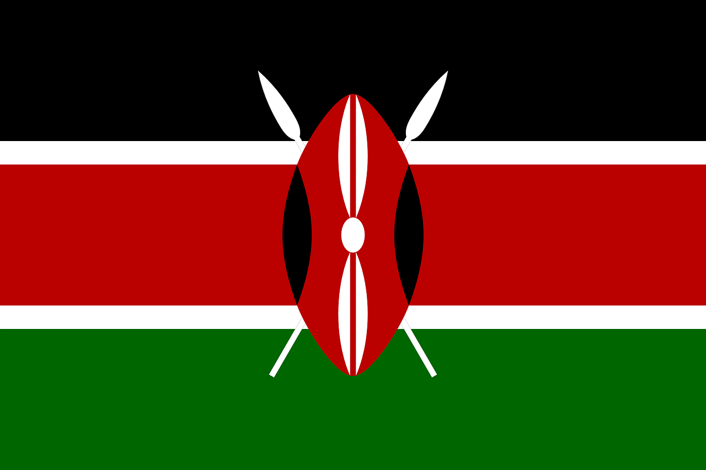
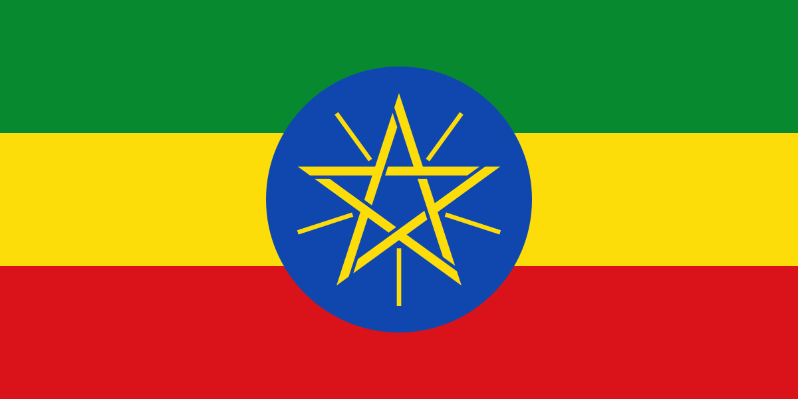
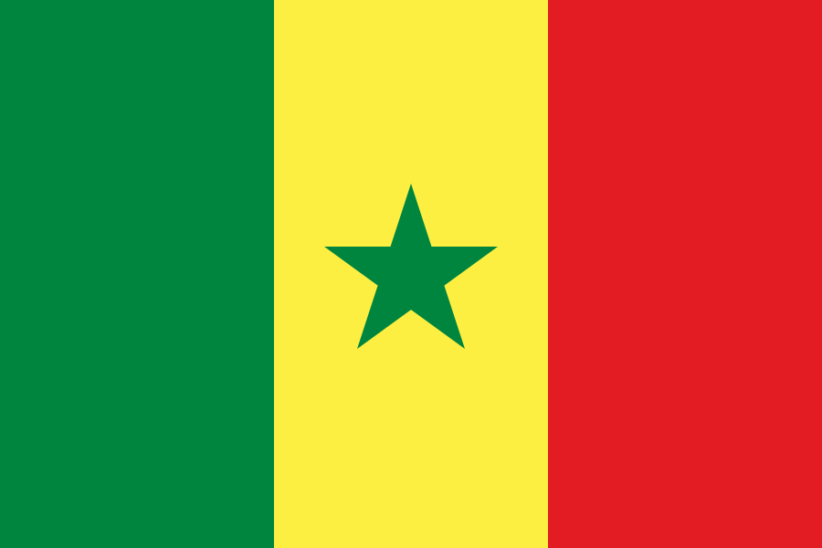

Mama Africa
Voici quelques informations de base sur certains pays africains :

Capitale : Rabat
Langue officielle : Arabe et Amazigh
Monnaie : Dirham marocain
Culture :
Le Maroc possède une culture riche et diversifiée, influencée par des siècles d’histoire et la diversité de ses populations.
Langues et traditions : Les langues officielles sont l’arabe et l’amazigh. La culture marocaine est un mélange d’influences arabes, berbères, africaines et méditerranéennes.
Cuisine : Le Maroc est célèbre pour ses plats traditionnels comme le couscous, le tajine, la pastilla et les pâtisseries orientales. Le thé à la menthe est une boisson emblématique.
Musique et arts : La musique traditionnelle comprend le gnawa, le chaâbi et l’andalou. L’artisanat est très développé : tapis, poteries, mosaïques, bijoux et textiles.
Festivals : Le Maroc célèbre de nombreux festivals culturels et religieux, tels que Mawazine, le festival de Fès, le Ramadan et l’Aïd.
Architecture : Le pays possède de magnifiques médinas, mosquées, riads traditionnels et monuments historiques à Fès, Marrakech et Rabat.
Capitale : Le Caire
Langue officielle : Arabe
Monnaie : Livre égyptienne
Culture :
L'Égypte est l'une des plus anciennes civilisations au monde, célèbre pour les pyramides et le Sphinx.
LaLangues et traditions : L'arabe est la langue principale et les traditions familiales sont très importantes en Égypte.
Cuisine : La gastronomie égyptienne est riche avec des plats comme le koshari et le ful medames.
Musique et arts : La musique et la danse traditionnelles reflètent le patrimoine égyptien ancien et moderne.
Festivals : Le Ramadan et les fêtes locales rythment la vie culturelle du pays.
Architecture : L'Égypte est célèbre pour ses pyramides, temples et monuments qui témoignent d’une histoire millénaire.
Capitale : Abuja
Langue officielle : Anglais
Monnaie : Naira
Culture :
Connu pour la musique afrobeat et l'industrie cinématographique Nollywood.
Langues et traditions : Le Nigeria est un pays multilingue avec plus de 500 langues, et les traditions varient selon les différentes ethnies.
Cuisine : La gastronomie nigériane est riche et épicée, avec des plats comme le jollof rice et le suya.
Musique et arts : La musique et la danse, du highlife au afrobeat, reflètent la diversité culturelle du pays.
Festivals : Des festivals comme le Durbar et l’Osun-Osogbo célèbrent la culture et la religion locales.
Architecture : Le Nigeria présente un mélange d’architecture traditionnelle et moderne, des villages typiques aux grandes villes comme Lagos.

Capitale : Nairobi
Langue officielle : Swahili et Anglais
Monnaie : Shilling kényan
Culture :
Réputé pour ses réserves naturelles et les safaris.
Langues et traditions : Le Kenya est un pays multilingue où le swahili et l'anglais sont officiels, avec de nombreuses traditions ethniques variées.
Cuisine : La gastronomie kenyane inclut des plats comme l’ugali, le nyama choma et les légumes locaux.
Musique et arts : La musique traditionnelle et moderne, ainsi que l’artisanat local, reflètent la richesse culturelle du pays.
Festivals : Des festivals comme le Lamu Cultural Festival célèbrent la musique, la danse et l’héritage swahili.
Architecture : Le Kenya mélange architecture traditionnelle africaine, bâtiments coloniaux et structures modernes dans ses villes.
Capitale : (Pretoria, Le Cap, Bloemfontein)
Langue officielle : Plusieurs langues, dont l'anglais et l'afrikaans
Monnaie : Rand sud-africain
Culture :
Pays multiculturel avec une histoire riche dans la lutte contre l'apartheid.
Langues et traditions : L'Afrique du Sud compte 11 langues officielles et une grande diversité culturelle avec des traditions variées selon les communautés.
Cuisine : La gastronomie sud-africaine inclut le braai, le bobotie et d'autres plats influencés par différentes cultures.
Musique et arts : La musique traditionnelle, le jazz sud-africain et l’artisanat reflètent la richesse culturelle du pays.
Festivals : Des festivals comme le National Arts Festival et le Cape Town Jazz Festival célèbrent la musique et les arts.
Architecture : L’architecture sud-africaine combine bâtiments coloniaux, modernes et constructions traditionnelles africaines.
Capitale : Dodoma
Langue officielle : Swahili et Anglais
Monnaie : Shilling tanzanien
Culture :
La Tanzanie est connue pour le mont Kilimandjaro et les parcs nationaux.
Langues et traditions : Le swahili et l'anglais sont les langues officielles, avec une riche diversité culturelle.
Cuisine : La cuisine tanzanienne comprend l'ugali, le nyama choma et les plats à base de banane plantain.
Musique et arts : La musique traditionnelle, les danses et l'artisanat sont très développés.
Festivals : Le festival de Zanzibar et le Mwaka Kogwa sont célèbres.
Architecture : L'architecture swahilie, les bâtiments coloniaux et les cases traditionnelles.

Capitale : Addis-Abeba
Langue officielle : Amharique
Monnaie : Birr éthiopien
Culture :
L'Éthiopie est l'un des plus anciens pays du monde avec une histoire riche.
Langues et traditions : L'amharique est la langue officielle, avec de nombreuses langues locales et traditions.
Cuisine : La cuisine éthiopienne est unique avec l'injera, le wat et les épices.
Musique et arts : La musique traditionnelle éthiopienne et les croix orthodoxes sont célèbres.
Festivals : Timkat (Épiphanie) et Meskel (Fête de la Croix) sont des festivals importants.
Architecture : Les églises creusées dans la roche à Lalibela et les châteaux de Gondar.
Capitale : Accra
Langue officielle : Anglais
Monnaie : Cedi ghanéen
Culture :
Le Ghana est connu pour son hospitalité et ses sites historiques.
Langues et traditions : L'anglais est la langue officielle, avec de nombreuses langues locales et traditions.
Cuisine : Le jollof rice, le fufu et le banku sont des plats populaires.
Musique et arts : La musique highlife et l'art kente sont célèbres.
Festivals : Le festival de l'Abissa et le festival de la récolte de Yam.
Architecture : Les forts et châteaux le long de la côte, et l'architecture moderne à Accra.

Capitale : Dakar
Langue officielle : Français
Monnaie : Franc CFA
Culture :
Le Sénégal est connu pour sa musique et sa littérature.
Langues et traditions : Le français est la langue officielle, avec le wolof et d'autres langues locales.
Cuisine : Le thiéboudienne, le yassa et le mafé sont des plats traditionnels.
Musique et arts : La musique mbalax et les arts visuels sont très développés.
Festivals : Le festival de jazz de Saint-Louis et le festival de Dakar.
Architecture : L'architecture coloniale à Saint-Louis et les mosquées de Touba.
Capitale : Tunis
Langue officielle : Arabe
Monnaie : Dinar tunisien
Culture :
La Tunisie est un pays méditerranéen avec une histoire riche.
Langues et traditions : L'arabe est la langue officielle, avec des influences berbères et françaises.
Cuisine : Le couscous, le tajine et les pâtisseries tunisiennes sont réputés.
Musique et arts : La musique malouf et les mosaïques romaines sont célèbres.
Festivals : Le festival de Carthage et le festival du Sahara.
Architecture : Les médinas, les mosquées et les sites romains comme Carthage.